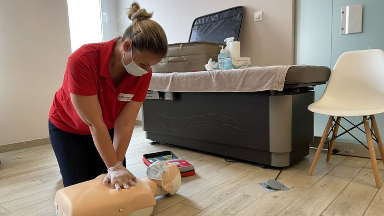
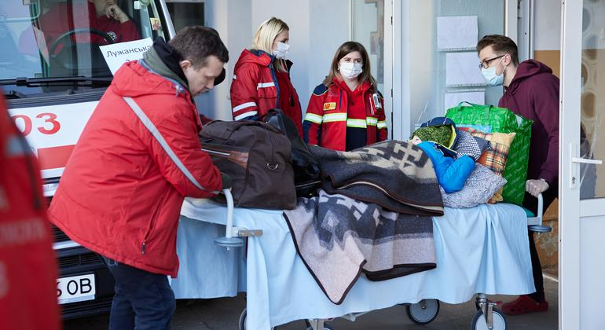
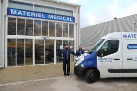

Missions de 2022

Prévention au gestes de premier secours
09/11/2022
Nous sommes intervenues dans plusieurs écoles à travers différents pays d'Afrique afin d'y enseigné au enfants les gestes
à connaître impérativement afin de venir en aide a une personne en danger.

Renfort au personnel soignant d'Ukraine
16/10/2022
Nous avons apportés de l'équipement médical dans les hôpitaux les plus chargés du pays, nous avons aussi mobilisé la presque totalité de notre personnel pour
apporter des soins aux civiles gravement blessés.

Livraison d'équipements dans les pays pauvres d'Europe
05/09/2022
Nous avons livré de l'équipement dans les hôpitaux des pays les plus démunis d'Europe tel que la Béliorussie, la Moldavie, le Kosovo, la Bulgarie.